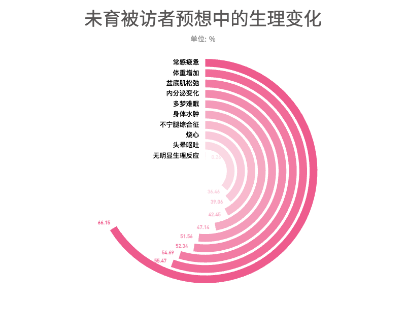
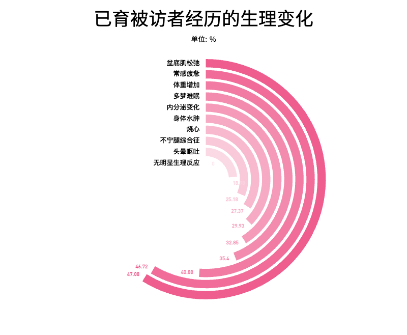
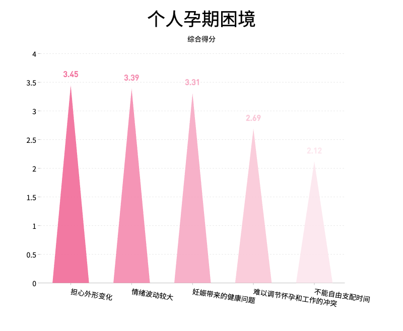
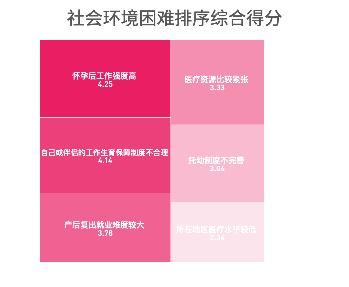

生育困境
身心困境
在孕育过程中，生理的变化尤为显著。在生理变化的调查中，盆底肌松弛、常感疲惫和体重增加是已育女性中频繁出现的问题。
而对于没有生育经历的被调查者而言，预想中的困难则更多。
对于可能出现的每种情况都有消极的预期，
说明没有生育经历的被调查者对于生育过程中的生理变化并不完全了解，从调查情况来看，甚至可能过分紧张。


情绪问题也同样值得关注，在调查中，除了担心外形变化之外，被调查者们
认为孕妇的情绪波动是个人身心层面第二棘手的问题。

社会困境
被访者认为工作强度和生育保障制度
是其面临的主要困难，对于女性而言，产后复出的就业难度的综合评分为3.83，
高于平均水平，说明产后再就业对女性群体而言并不是一件容易的事。

家庭困境
家庭起居详细而琐碎，除了给予孕妇情绪上的关注以外，柴米油盐等家务事也可能成为运气困境的来源。
在调查中，长辈照料不足、丈夫的劳务分担不足是排名靠前的重要因素，相较之下，
情感支持仅排在第三，这意味着大多数孕妇在孕育孩子的过程中还要面对繁杂的家务，而家庭成员在家务的分担上显然付出不足。